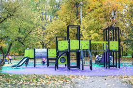
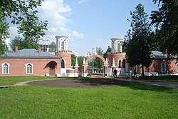
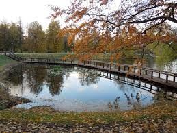
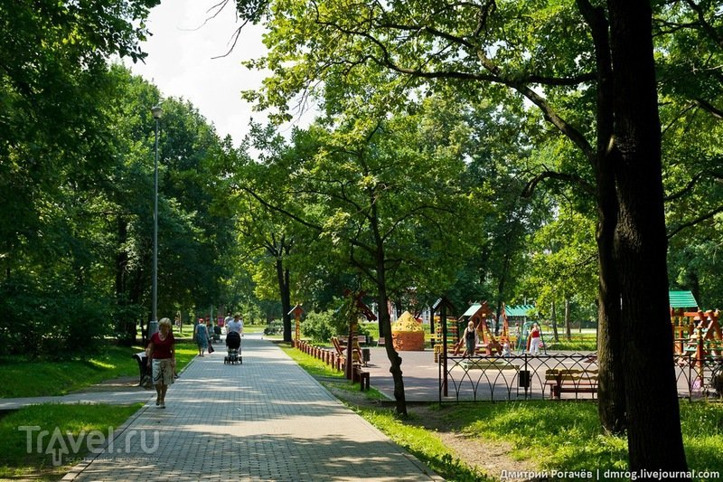

О нас!
Природный историко-архитектурный и рекреационный комплекс «Усадьба Воронцо́во», более известный как «Воронцо́вский парк» — зона отдыха и зелёная зона на Юго-Западе Москвы.
Памятник садово-паркового искусства конца XVIII — начала XIX века площадью около 48,7 га, расположен на территории бывшего владения боярина Воронца (XVI века). В регулярной части парка сохранились уникальные экземпляры старовозрастных деревьев — дуба, вяза, липы. Во время советской власти после решения признать объект памятником архитектуры началось восстановление парка и прилегающих построек. Восстановлен в 2006—2007 годах, окончательно открыт для посещения с 14 июля 2007 года.
Векипедия: Усадьба Воронцово(Воронцовский парк)Приходите к нам с детьми, у нас есть детские площадки и парк аттракционы


Главный въезд усадьбу Воронцово XVIII век

Пруд

Алея
На территории парка расположены
- Пять прудов
- Обелиск «Вечная слава защитникам земли Российской»
- Поклонный крест
- Итальянский сад
- Китайский сад
- Храм Живоначальной Троицы
- Дубрава